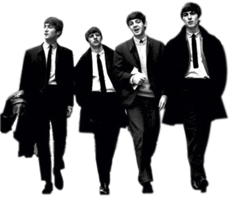

How the Beatles Got Together and Became the Best-Selling Band of All Time
The band got their name by combining the words 'beetles' and 'beat'

Before John, Paul, George and Ringo became the Beatles, they were simply four teenagers from Liverpool. Never could John Lennon, Paul McCartney, George Harrison and Ringo Starr have imagined they would go on to form one of the most successful groups in modern history, influencing the popular culture in not only music, but also fashion, film and global representation. In the late 1950s and early 1960s, it was difficult to imagine a band hailing from the relatively poor northwest port city of Liverpool, England, could get a gig in the thriving London music scene of the south, let alone export their eventual homegrown success to a world eagerly opening up to the counter-culture movement of the '60s and the burgeoning phenomenon that was called rock 'n' roll.
Lennon and McCartney first met while playing in a skiffle band
The name of the band was in flux during this period, which would witness the group play under monikers Johnny and the Moon Dogs as well as The Silver Beetles and The Silver Beats. An art school student and friend of Lennon’s, Stuart Sutcliffe, was brought into the band to play bass. Sutcliffe and Lennon are often credited with coining the name the Beatles, though various stories abound on the actual origins. The name that would become synonymous with modern music was a combination of beetles and beat, hence the Beatles.Forging a friendship that would become the basis of their singer-songwriter partnership in the future, Lennon and McCartney would often go away together, playing acoustic sets in small pubs. “John and I used to hitch-hike places together,” McCartney says in Paul McCartney: Many Years From Now by Barry Miles. “It was something that we did together quite a lot; cementing our friendship, getting to know our feelings, our dreams, our ambitions together. It was a wonderful period. I look back on it with great fondness.”
Their first music contract was signed in January 1962
A fateful meeting between two music-loving teenagers in 1957 is where it all began. Sixteen-year-old rhythm-guitarist Lennon, the son of a merchant seaman, was performing with the Quarrymen, a skiffle (folk music blended with jazz or blues) band booked to perform at events at a church fete in Woolton, Liverpool. While setting up their instruments for the evening performance, the band’s bass player introduced Lennon to a classmate, 15-year-old McCartney, who would join in on a couple of numbers that night and soon would be offered a permanent spot in the Quarrymen. McCartney, the son of a former band-member and nurse, would play his first official event with the group in October, but things didn’t go exactly as planned. “For my first gig, I was given a guitar solo on ‘Guitar Boogie.’ I could play it easily in rehearsal so they elected that I should do it as my solo,” McCartney said in the Anthology documentary. “Things were going fine, but when the moment came in the performance I got sticky fingers; I thought, ‘What am I doing here?’ I was just too frightened; it was too big a moment with everyone looking at the guitar player. I couldn’t do it. That’s why George was brought in.”Harrison, the son of a bus conductor and shop assistant, joined the Quarrymen as lead guitarist at age 15. Influenced by rockabilly, his guitar licks would help shape the group’s early sound. Though still performing as the Quarrymen, Lennon, McCartney and Harrison would go on to form the core that would soon become the Beatles. Throughout 1958 and 1959 the Quarrymen gigged whenever they could, including local parties and family events such as the reception for Harrison’s brother’s wedding. Professional bookings included venues such as the Casbah Coffee Club in Liverpool and Hippodrome in Manchester.